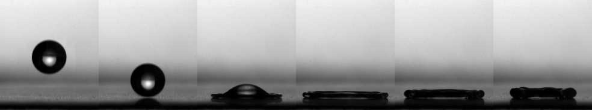

Thèse : Gouttes et surfaces complexes : étalement et impact
J'ai effectué un doctorat sous la direction de Anne-Laure Biance et Catherine Barentin à l'Institut Lumière Matière - Lyon (iLM - UCBL) entre 2019 et 2022.

mots clefs : impact, mouillage, super-hydrophobie

Résumé
De la goutte de pluie sur un textile au gel hydroalcoolique sur nos mains, comprendre l’étalement de gouttes de fluides sur divers types de surfaces est un enjeu majeur. Nous nous sommes intéressés à ce phénomène dans plusieurs situations.
Premièrement, nous avons étudié l'étalement spontané d'un fluide complexe à seuil (des gels de Carbopol) sur une surface lisse hydrophile. Pour un tel fluide, la forme de la goutte à la fin d’un étalement spontané sur une surface hydrophile ne vérifie plus la loi de Young-Dupré. Nous avons montré que la goutte se fige dans un état final qui ne dépend plus seulement des paramètres thermodynamiques mais aussi de la taille initiale de la goutte, de sa contrainte seuil et des conditions aux limites hydrodynamiques.
Dans un second temps, nous avons étudié l'étalement forcé (lors d’un impact) de fluide simple sur une surface micro-texturée super-hydrophobe. Ces surfaces ont la propriété d’avoir une friction plus faible qu’une surface lisse, c’est-à-dire que le fluide glisse à l’interface liquide-solide. Nous avons ainsi observé que l'étalement est plus long que sur une surface lisse. Cette étude a permis d’étudier l’influence du glissement sur un phénomène non stationnaire. Cependant, lorsque la vitesse d'impact devient trop importante, une transition entre un état de mouillage de Cassie à un état Wenzel peut être observée et le caractère super-hydrophobe perdu. Dans la dernière partie, nous avons cherché à fabriquer des surfaces qui résistent à une telle transition. Pour cela, nous avons fabriqué des membranes flexibles, micro-texturées et super-hydrophobes. Nous avons observé qu’elles sont bien plus robustes à l’empalement : une vitesse d’impact supérieure est nécessaire pour observer un empalement par rapport à un substrat non déformable. Ce retard à l'empalement est le résultat d'au moins deux effets. La vitesse relative de la membrane réduit la vitesse d'impact. La courbure de la membrane flexible pendant l'impact augmente la fraction solide, les textures deviennent plus proches ce qui évite la pénétration du fluide.
Manuscrit
Articles
Mes travaux ont conduit à la rédaction de deux articles.
Drag reduction on drop during impact on multiscale superhydrophobic surfaces - Journal of Fluid Mechanics 2020
Grégoire Martouzet, Choongyeop Lee, Christophe Pirat, Christophe Ybert et Anne-Laure Biance
Consulter
- Consulter sur le site de l'éditeur (version finale)
- Consulter sur archives-ouvertes.fr (pré-version)
Citer
@article{martouzet2020,
title={Drag reduction on drop during impact on multiscale superhydrophobic surfaces},
author={Martouzet, Gr{'e}goire and Lee, Choongyeop and Pirat, Christophe and Ybert, Christophe and Biance, Anne-Laure},
journal={Journal of Fluid Mechanics},
volume={892},
year={2020},
publisher={Cambridge University Press}
}
Résumé
La dynamique de l’impact d’une goutte liquide dépend de l’interaction entre le liquide et le substrat. En particulier, lorsque le frottement liquide–solide diminue, l’étalement de la goutte après l’impact dure plus longtemps. Nous caractérisons cet effet en utilisant deux types de surfaces superhydrophobes, présentant des propriétés de mouillage similaires mais des coefficients de frottement différents. Il apparaît que, pour des vitesses d’impact suffisamment élevées, une réduction du frottement retarde la formation de la couche limite visqueuse et conduit à une augmentation du temps nécessaire pour atteindre le rayon maximal de la goutte impactante. Une analyse asymptotique est menée pour quantifier cet effet et montre un bon accord avec les résultats expérimentaux. Fait intéressant, cette nouvelle description complète le cadre général de l’impact des gouttes sur des surfaces solides et aborde plus largement la question de la réduction de la traînée en présence de glissement dans des écoulements non stationnaires.
Dynamic arrest during the spreading of a yield stress fluid drop - Physical Review Fluids 2021
Grégoire Martouzet, Loren Jørgensen, Yoann Pelet, Anne-Laure Biance, et Catherine Barentin
Consulter
- Consulter sur le site de l'éditeur (version finale)
- Consulter sur archives-ouvertes.fr (pré-version)
Citer
@article{martouzet2021dynamic,
title={Dynamic arrest during the spreading of a yield stress fluid drop},
author={Martouzet, Gr{'e}goire and J{\\o}rgensen, Loren and Pelet, Yoann and Biance, Anne-Laure and Barentin, Catherine},
journal={Physical Review Fluids}, volume={6},
number={4}, pages={044006},
year={2021}, publisher={APS} }
Résumé
Lorsqu'une goutte de liquide est déposée doucement sur une surface mouillante, elle s'étale à cause des forces capillaires jusqu'à atteindre un équilibre thermodynamique défini par les tensions de surface du système. Nous étudions ici expérimentalement l'étalement d'une goutte faite de fluide complexe à seuil. Un tel fluide ne coule que si la contrainte appliquée est supérieure à une valeur donnée. Dans ce cas, après la phase d'étalement, le mouvement s'arrête et un angle de contact bien défini peut être mesuré. Cet angle de contact dépend des propriétées rhéologiques du fluide (en particulier de sa contrainte seuil), de son rayon et de la condition hydrodynamique à la surface. Ce résultat est comparé quantitativement à une analyse montrant que à cause à la contrainte seuil, un équilibre mécanique est atteind et il ne correspond pas à l'équilibre thermodynamique.
Références
- This is the very first item